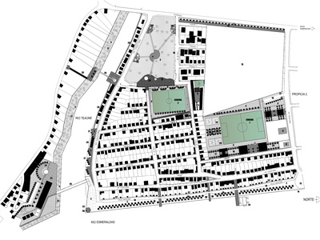
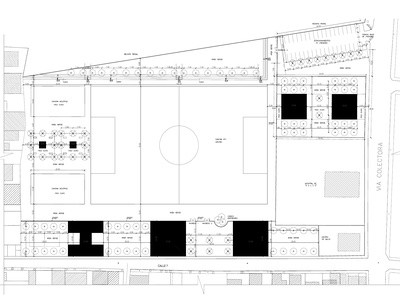
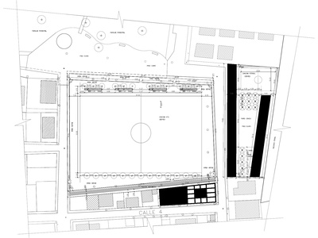
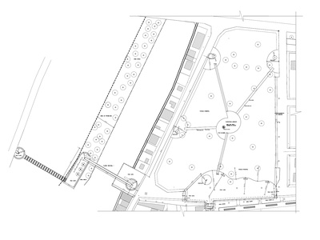
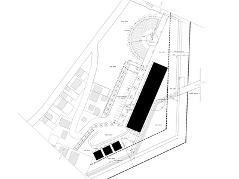

Se propone un tejido urbano con una estructura cuya disposición configura el espacio público, estimula las relaciones humanas, da sentido de pertenencia y consecuentemente, eleva la autoestima de la gente. La propuesta, además, tiene la virtud de haber sido pensada en coordinación con sus habitantes, salvaguardando sus intereses, receptando sus derechos y, materializando sus sueños.
Equipo de trabajo: Patricio Guerrero, Cristian Brown, Héctor Paredes, Angélica Arias.
Año de proyecto: 2005
Ubicación: Esmeraldas, Ecuador